CUDA 从线程到 Tensor Core
从一个 for 循环怎么交给成千上万个线程讲起，一步步走到 2026 年 AI kernel 的前沿：线程层级、warp、内存层级、合并访存、occupancy、roofline、GEMM、Tensor Core、Hopper / Blackwell、FlashAttention。共 27 章，每章配一个动画。
每章的结构：本章回答的问题 → 讲解（白话类比 → 公式 → 例子）→ 练习与作答记录 → 口诀 → 复习卡片 → 延伸阅读。
怎么看
- 讲义：每章正文里嵌着 GIF 动画，打开就能播放。
- 可交互动画：章节标题下的"打开本章可交互动画"，或点下面的卡片进入讲义后再打开。按钮：▶ 播放自动演示，→ 单步自己控制节奏，↺ 从头开始；有滑块的可以拖动参数。
- 复习卡片：先看问题自己答，再点开折叠的答案核对。
全部章节
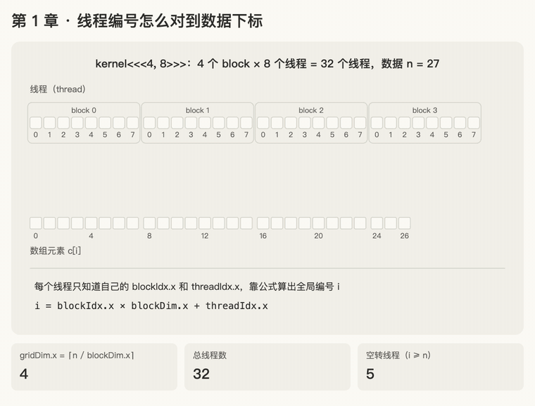
第 1 章一个 kernel 怎么分给成千上万个线程：grid / block / thread 与全局编号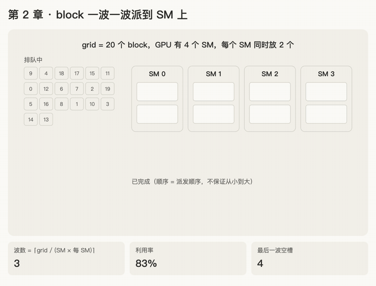
第 2 章block 为什么必须互不依赖：block 怎么被分到 SM 上 第 3 章warp 与 SIMT：32 个线程一起走，分岔了怎么办
第 3 章warp 与 SIMT：32 个线程一起走，分岔了怎么办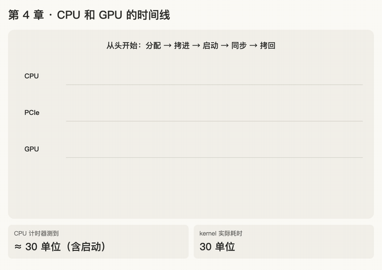
第 4 章一个完整的 CUDA 程序：分配、拷贝、启动、同步、查错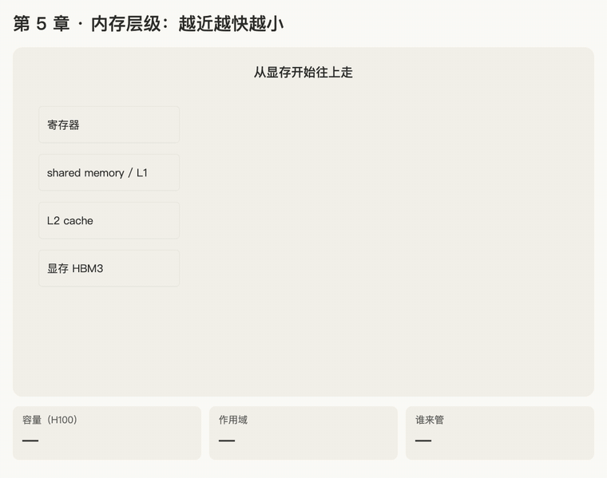
第 5 章GPU 内存层级：寄存器、shared memory、L1 / L2、显存 第 6 章合并访存：一个 warp 一次读显存，要搬几趟第 7 章shared memory 与 bank conflict
第 6 章合并访存：一个 warp 一次读显存，要搬几趟第 7 章shared memory 与 bank conflict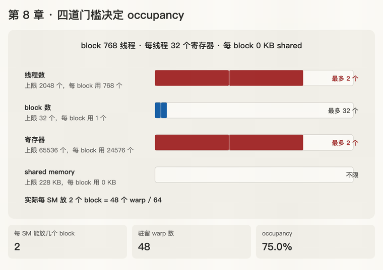
第 8 章occupancy 与延迟隐藏：一个 SM 上同时养多少个 warp 第 9 章性能分析：roofline、正确计时与 Nsight
第 9 章性能分析：roofline、正确计时与 Nsight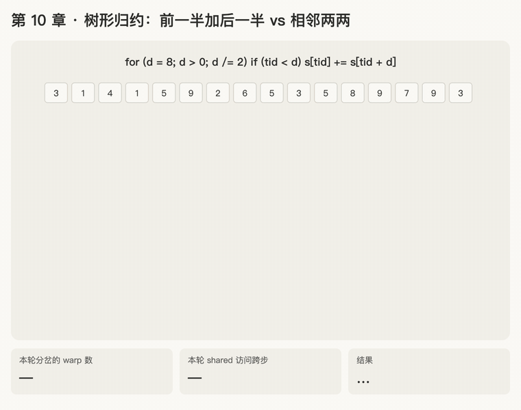
第 10 章归约：一百万个数求和，怎么让一千个线程分着加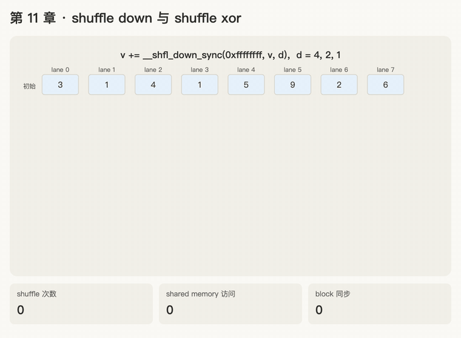
第 11 章warp shuffle 与原子操作：不经过 shared memory 交换数据 第 12 章前缀和 scan：每个位置都要"前面所有数的和"
第 12 章前缀和 scan：每个位置都要"前面所有数的和" 第 13 章SGEMM ①：从 naive 到 shared memory 分块
第 13 章SGEMM ①：从 naive 到 shared memory 分块 第 14 章SGEMM ②：寄存器分块、向量化与 warptiling
第 14 章SGEMM ②：寄存器分块、向量化与 warptiling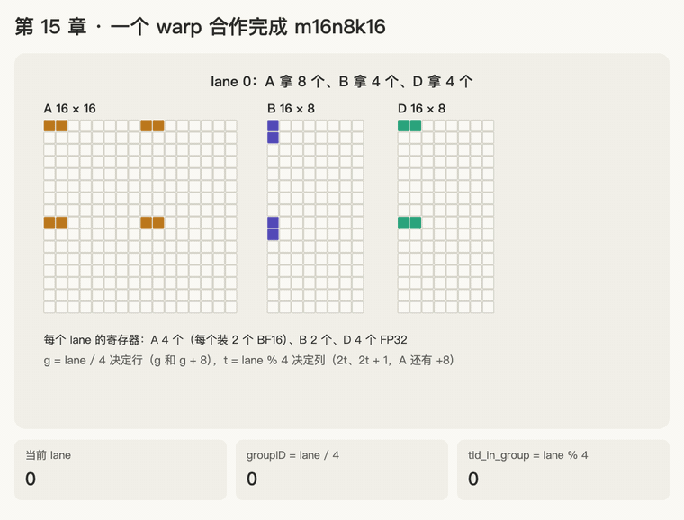
第 15 章Tensor Core：WMMA、mma.sync 与 ldmatrix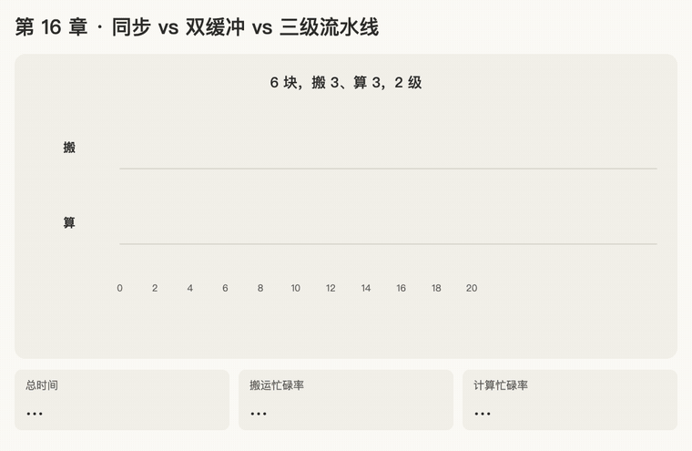
第 16 章异步拷贝与多级流水线：搬下一块的时候算这一块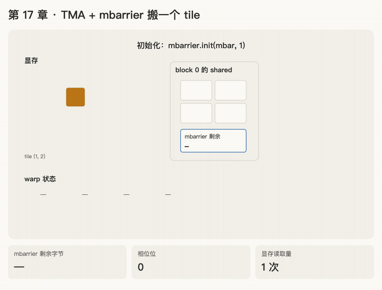
第 17 章Hopper ①：TMA、mbarrier、cluster 与分布式 shared memory 第 18 章Hopper ②：wgmma、warp specialization 与 persistent kernel
第 18 章Hopper ②：wgmma、warp specialization 与 persistent kernel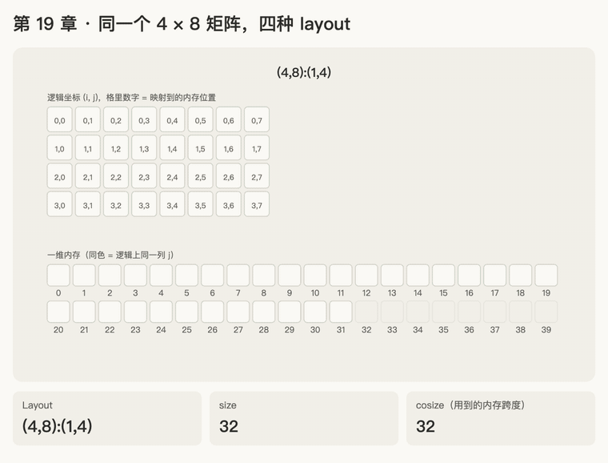
第 19 章CuTe：用 (Shape, Stride) 描述一切数据布局 第 20 章Blackwell：tcgen05、Tensor Memory、2-SM MMA 与块缩放低精度
第 20 章Blackwell：tcgen05、Tensor Memory、2-SM MMA 与块缩放低精度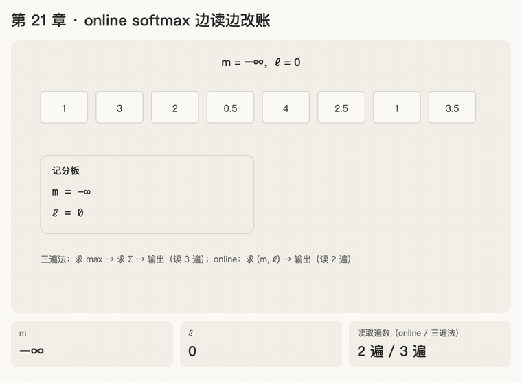
第 21 章online softmax 与算子融合：少读一遍显存就是快 第 22 章FlashAttention：从 FA1 到 FA4，每一代在解决什么瓶颈
第 22 章FlashAttention：从 FA1 到 FA4，每一代在解决什么瓶颈 第 23 章推理 kernel：decode 为什么是 memory-bound，以及 paged KV、split-KV、MLA、megakernel
第 23 章推理 kernel：decode 为什么是 memory-bound，以及 paged KV、split-KV、MLA、megakernel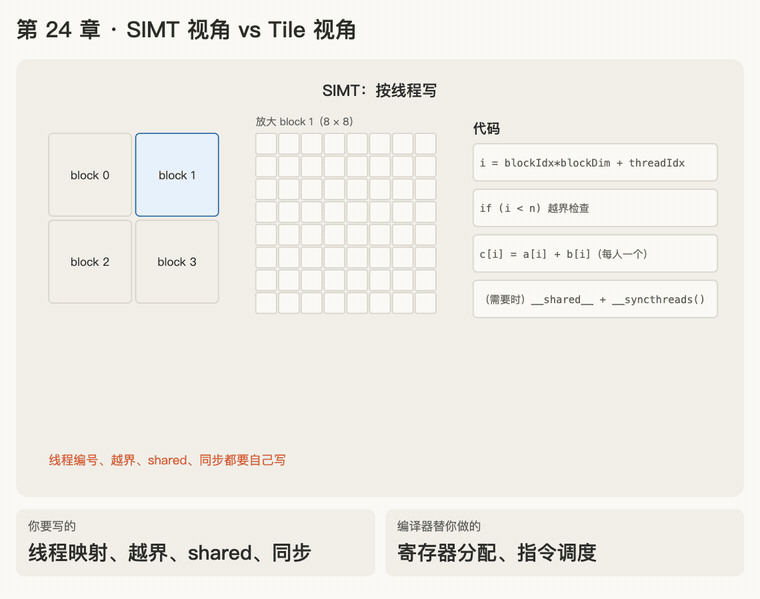
第 24 章Tile 模型与 kernel DSL：cuTile、Triton、CuTe DSL、TileLang、Helion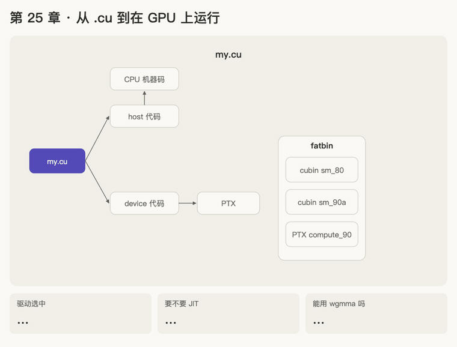
第 25 章编译与部署：PTX、cubin、fatbin、JIT，以及 Rust host + C++ kernel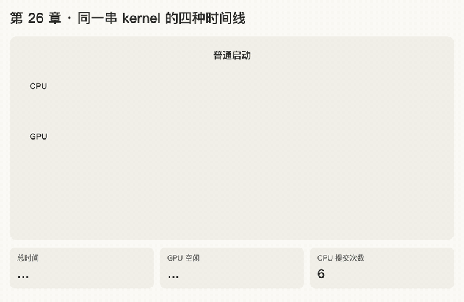
第 26 章延迟优化：streams、CUDA Graphs 与 PDL 第 27 章实战方法论与全书收尾：拿到一个慢 kernel，按什么顺序下手
第 27 章实战方法论与全书收尾：拿到一个慢 kernel，按什么顺序下手